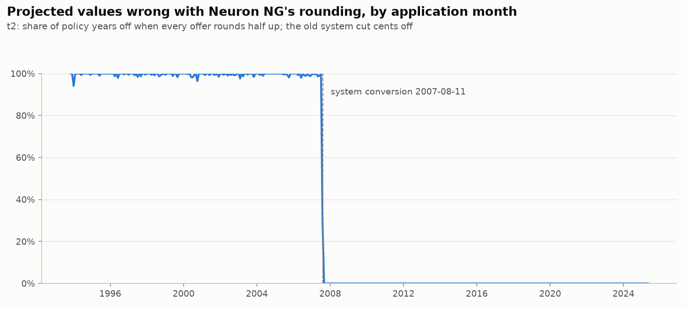
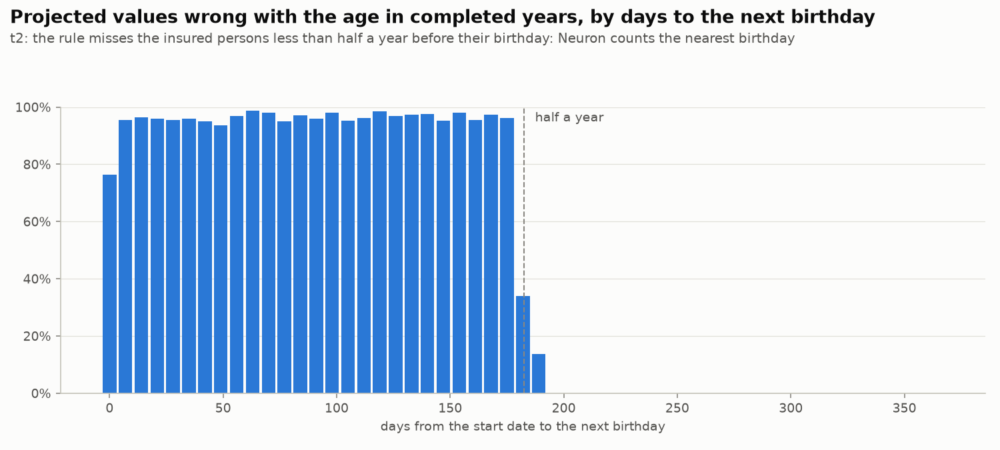
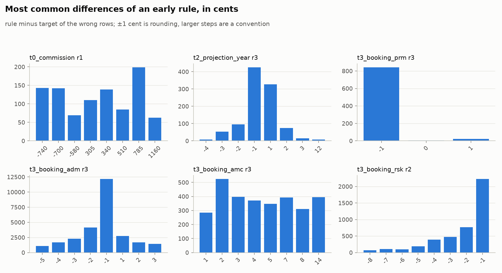
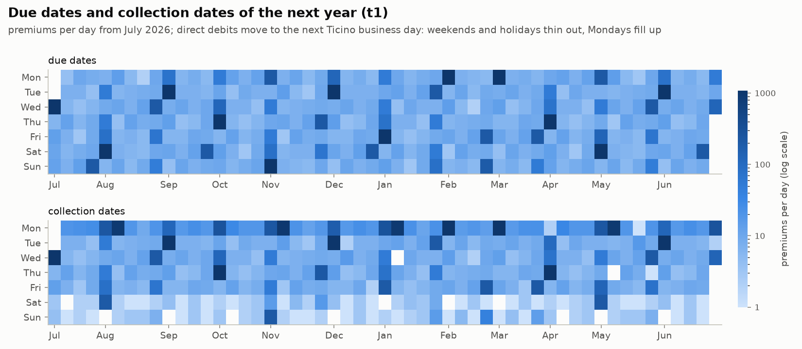
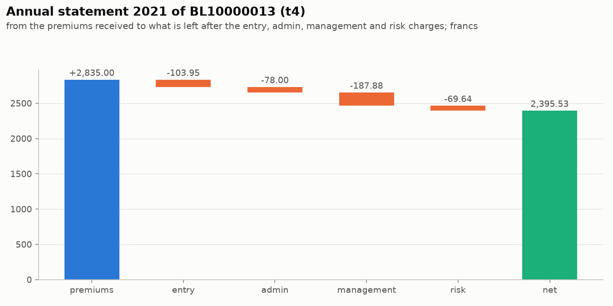
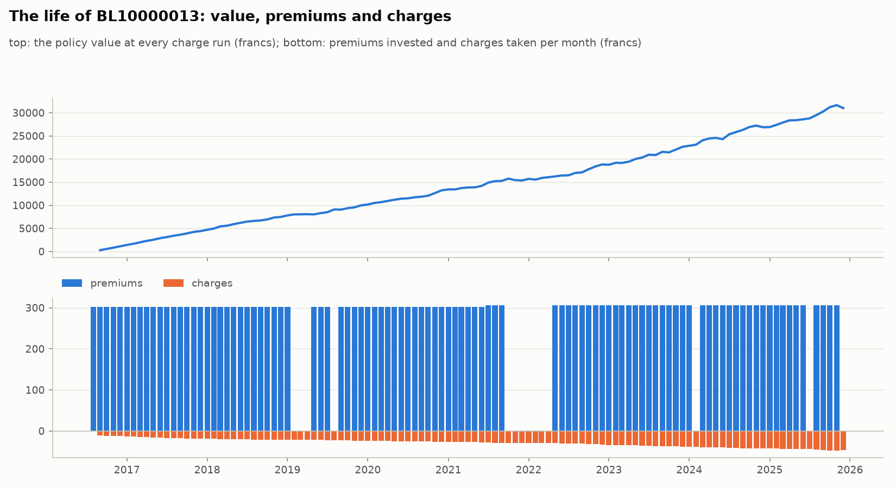

Neuron rules, pictured

The share of wrong projections by application month, all policies rounded half up.

The share of wrong projections by days from the start date to the next birthday, ages in completed years.

The most common differences (rule minus target, in cents) of an early round of every target.

The due dates and collection dates of the year after the extract date as calendar heat maps.

The annual statement of the task's example (BL10000013, 2021) as a waterfall: the premiums, every charge

The life of the task's example policy (BL10000013): its value at every run, and its premiums and charges